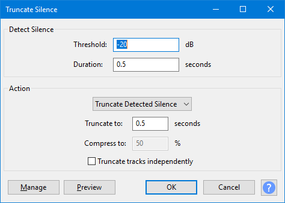

Truncate Silence
- Silences are detected if they remain below the specified level for at least the specified time duration.
- Detected silences (defined as above) are then made shorter by deleting a section from the middle of the silent region.
- White space between or preceding audio clips will be regarded as absolute silence and will always be removed if at least as long as the specified time duration.
- Labels in selected or Sync-Lock-selected label tracks will be truncated, deleted or moved back by silence truncation.
- Accessed by:
- 
{kind=link}
Detect Silence
There are two controls that determine which audio will be treated as "silence":
- Level (dB): To be treated as silence, the audio must be below this level. If not enough silences are being reduced, increase the level to a higher (less negative) number. Note that due to rounding, audio may be truncated that appears in the Amplify effect to be exactly at the level you enter here.
- Duration (seconds): The minimum duration that will be treated as silence. To be treated as silence, the audio must remain below the "Level (dB)" entered for at least this amount of time. If not enough silences are being reduced, reduce this duration level. The shortest duration value you can enter is 0.001 seconds.
Action
There are two methods available for shortening the silence. The simplest method is by truncating the silence (default mode) and a more advanced method is by compressing the length of the silence.
Truncate Detected Silence
When this method is selected, silences are simply shortened to the "Detect Silence" duration (see example below).
When this method is selected, the "Truncate to:" (seconds) control is available lower down the interface and the "Compress to:" (percent) control is grayed out.
All detected silences are shortened to the same duration. When the audio remains below the "Detect Silence" level for at least the "Detect Silence" duration, it will be reduced to the "Truncate to" duration entered here.
Compress Excess Silence
This is a more advanced mode that allows silences to be shortened proportionally according to their original duration.
When this method is selected, silence in excess of the "Detect Silence" duration is reduced to a percentage of its original duration (see example below).
When this method is selected, the "Compress to:" (percent) control is available lower down the interface and the "Truncate to:" (seconds) control is grayed out. Because silences are reduced by a specified percentage, the final duration of each detected silence varies according to its original length.
When the audio remains below the "Detect Silence" level for at least the "Detect Silence" duration, any silence in excess of the "Detect Silence" duration is reduced to the "Compress to" percentage entered here. The entire detected silence is not proportionally reduced.
Truncate tracks independently
When the effect is run on multiple selected tracks the  Truncate tracks independently checkbox determines whether to treat the tracks as a mix that must be kept synchronized or to process the tracks independently one after the other.
Truncate tracks independently checkbox determines whether to treat the tracks as a mix that must be kept synchronized or to process the tracks independently one after the other.
- When checked "off" (default), silence is only removed where it occurs in the same place in all the selected tracks. If the silence is in different places in each selected track, running the effect with this option enabled will not remove any silence.
- When checked "on", each selected track is processed individually. All the specified silence will be removed but different parts in each track may no longer be synchronized with each other. Choose this option to truncate silence in multiple different songs which you imported into separate Audacity tracks, and so are not part of a mix.
- If you do not select all audio tracks in the Group, the unselected tracks will have the same sections removed as are removed from the selected tracks, whether those sections in the unselected tracks are silent or not.
- If truncating tracks independently, only one audio track in each Group can be selected, because independent truncation of multiple tracks would desynchronize the tracks.
Buttons
Clicking on the command buttons give the following results:
- gives a dropdown menu enabling you to manage presets for the tool and to see some detail about the tool. For details see Manage presets.
- plays a short preview of what the audio would sound like if the effect is applied with the current settings, without making actual changes to the audio. The length of preview is determined by your setting in , the default setting is 6 seconds.
- applies the effect to the selected audio with the current effect settings.
- aborts the effect and leaves the audio unchanged.
 brings you to the appropriate page in the Manual, this page.
brings you to the appropriate page in the Manual, this page.
Limitations
Truncate Silence only removes audio, it does not reduce or eliminate noise in the silent sections that it keeps.
| Using Truncate Silence on selections which have fade outs or fade ins may remove the quietest part of fades. If you need to add fades, it is usually best to apply Truncate Silence before adding fades. |
Examples
Truncate Detected Silence examples:
Shorten all silences that are longer than 2 seconds to 2 seconds
This may be useful for shortening inter-track gaps from an LP or cassette recording.
- Set the Operation mode in the dropdown to "Truncate Detected Silence".
- Set the detection "Level:" control. If there is noticeable background noise you may need to set this as a higher (less negative) value than the default.
- Set the detection "Duration:" control to 2 seconds. Silences of 2 seconds or more will be chosen by the effect for truncation.
- Set the "Truncate to:" control to 2 seconds. All detected silences will be truncated to 2 seconds.
- Click .
Shorten silences that are 20 seconds or longer to 5 seconds
This may be useful for removing long pauses in a speech recording, without affecting the natural rhythm of the speech.
- Set the Operation mode in the dropdown to "Truncate Detected Silence".
- Set the detection "Level:" control.
- Set the detection "Duration:" control to 20 seconds. Silences of 20 seconds or more will be chosen by the effect for truncation.
- Set the "Truncate to:" control to 5 seconds. Silences of 20 seconds or more will be truncated to 5 seconds. Silences of less than 20 seconds will remain unchanged.
- Click .
Compress Excess Silence examples:
Compress silences that are longer than 2 seconds
This may be useful when a subtle reduction of longer silences is required while maintaining a sense of the relative length of each silence. In this example we will use a compression setting of 50% for simplicity.
- Set the Operation mode in the dropdown to "Compress Excess Silence".
- Set the detection "Level:" control.
- Set the detection "Duration:" control to 2 seconds.
- Set the "Compress to:" control to 50 percent.
- Click .
- Silences that were originally less than 2 seconds duration will be unaffected.
- Silences that were originally exactly 2 seconds duration will be detected, but the excess silence is zero so no shortening will occur.
- All silences that were longer than 2 seconds are shortened.
- The new length of the silence will be comprised of 2 seconds (the ignored duration) plus half (50%) of any additional silence.
Example: With the above settings, for an 8 second silence, there are 6 seconds beyond the 2 second detection period: The 8 second silence will therefore be reduced to 2 seconds plus 50% of 6 seconds, that is 2 + 3 = 5 seconds.
Compress all silences to half their original duration
Strictly speaking all silences cannot be selected because there is a fixed minimum length of silence that can be detected of 0.001 seconds. However, 0.001 seconds (1 millisecond) is an extremely short period, so we are able to compress all noticeable silences to half their original length. This may be useful to shorten a recorded lecture or dictated notes without affecting the words.
- Set the Operation mode in the dropdown to "Compress Excess Silence".
- Set the detection "Level:" control.
- Set the detection "Duration:" control to 0.001 seconds. Note that if set to 0 the and buttons are grayed out and a message is shown above the buttons: Minimum detection duration: 0.001 seconds..
- Set the "Compress to:" control to 50 percent.
- Click .